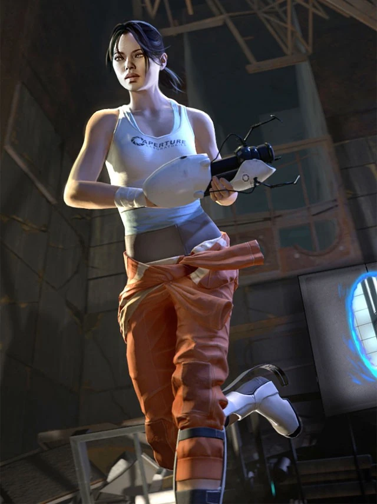
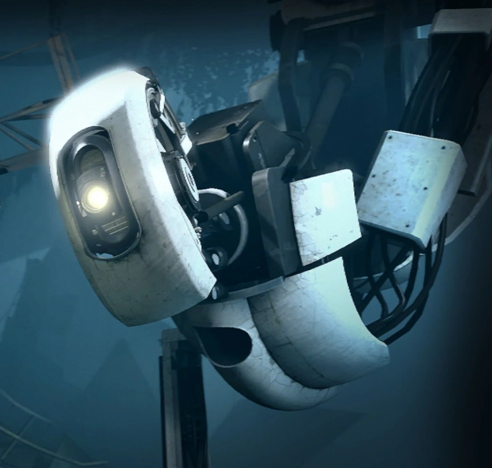
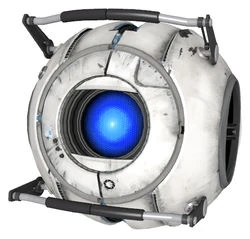
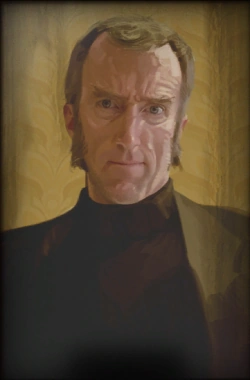
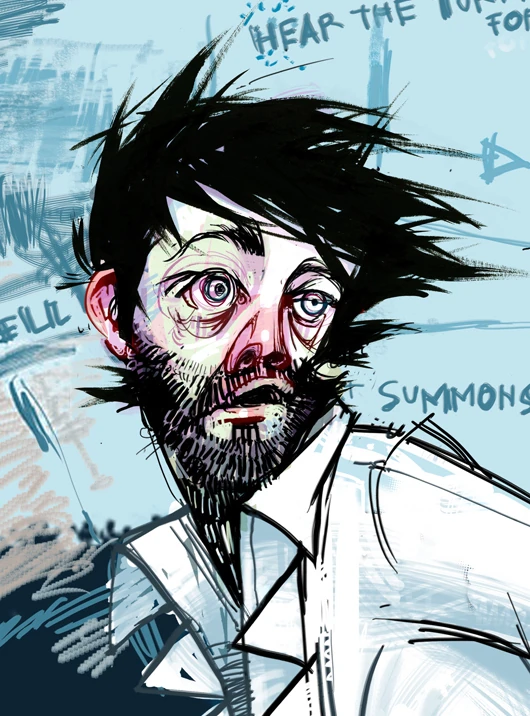

¿Qué es Portal?
Portal es una saga de videojuegos de puzzles en primera persona,
creada por "Erik Wolpaw", "Chet Faliszek" y "Kim Swift" en la empresa
"Valve" en 2007. Este se lanzo, por primeravez, en la coleccion de
juegos "The Orange box" para windows, xbox360 y PlayStation3
¿En qué consiste Portal?
Portal consiste en una serie de salas de pruebas situadas en las
ruinas de un antiguo centro de experimentos e investigación científica
conocido como "Aperture Sciences", en las que nuestro personaje
protagonista "Chell" deberá superar mediante el uso del
"Aperture Science Handheld Portal Device" (Tambien conocido
como la "pistola de portales"). Estas salas de pruebas son provistas
por "G.L.a.D.O.S" (Genetic Lifeform and Disk Operating System),
la cual es una inteligencia artificial que maneja todas las
instalaciones y recolecta datos de estas salas y sus sujetos de prueba
como Chell. Todo esto con la promesa de que al superar todas las
salas, se te dará como recompensa una tarta.
Personajes
Chell: Protagonista y el personaje que el jugador controla. Es
un sujeto de pruebas de aperture sience que despierta luego de un
letargo de tiempo indefinido para ser usada por GLaDOS

GLaDOS: IA autoconsciente y con singularidad, la cual controla
todo Aperture Science

Wheatlie: Modulo de comportamiento de GLaDOS que ayuda a
la protagonista al comienzo del segundo juego

Cave Jhonson: Antiguo dueño y fundador de
Aperture Science

Caroline: Antigua asistenta y mano derecha de
Cave Jhonson

Doug Rattman: Antiguo cientifico de Aperture Science que
sobrevivió despues de la gran masacre, causada por las neurotoxinas.
Nose ve en el juego directamente pero deja mensajes escondidos entre
las salas de prueba.

Curiosidades
-Chell (la protagonista) no habla nunca en los juegos. Esto llevó a
pensar a mucha gente que es muda, pero en realidad solo se niega a
hablar con robots
-Si te hacercas mucho al cubo de compañia, podras escuchar un leve
sonido similar al de como una voz humana.
-La cantnate de las dos canciones de los creditos de los juegos
principales es la voz original de GLaDOS.